12/01/2023 — Bài đố: một trong hai hay cả hai bệnh nhân này có OMI vùng bên cao / dấu hiệu "Cờ Nam Phi" không?
Bản dịch tiếng Việt của bài "Quiz post: do either or both of these patients have high lateral OMI / South African flag sign?" – Dr. Smith’s ECG Blog. Giữ nguyên toàn bộ 16 hình ảnh của bản gốc.
Viết bởi Pendell Meyers, biên tập bởi Smith
Hai bệnh nhân đến viện vì đau/tức ngực cấp. Đây là điện tâm đồ của họ:
Bệnh nhân 1:

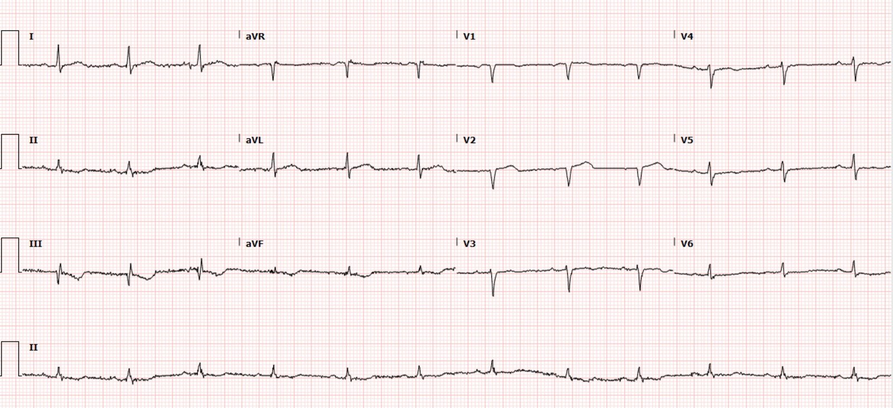
Bệnh nhân 2:

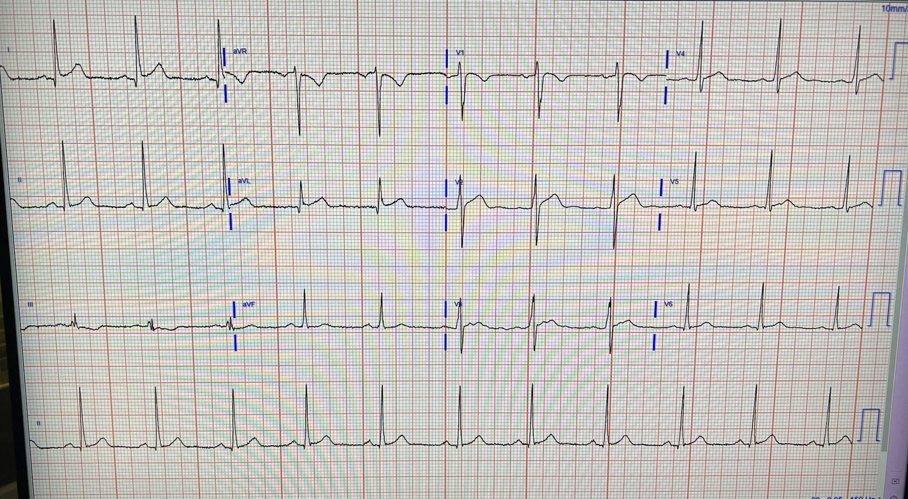
Xem phía dưới để biết “đáp án”, và phía dưới nữa là cả hai ca bệnh.
“Đáp án”:
Bệnh nhân 1 có OMI vùng bên cao rất kín đáo, với dấu hiệu "Cờ Nam Phi" (South African Flag). Bà bị OMI LAD cấp đang trong quá trình tái tưới máu, xem ca bệnh bên dưới.
Bệnh nhân 2 có điện tâm đồ biến thể bình thường giả dạng OMI vùng bên cao, và đã được loại trừ nhồi máu cơ tim, xem ca bệnh bên dưới.
Đây là dấu hiệu "Cờ Nam Phi" (Hình của Ken Grauer — kèm điện tâm đồ 12 chuyển đạo gốc của Bệnh nhân 1 đính bên dưới — Xem Bình luận của ông trong bài đăng ngày 8 tháng Tư năm 2022 trên Dr. Smith’s ECG Blog để biết thêm về dấu hiệu này).

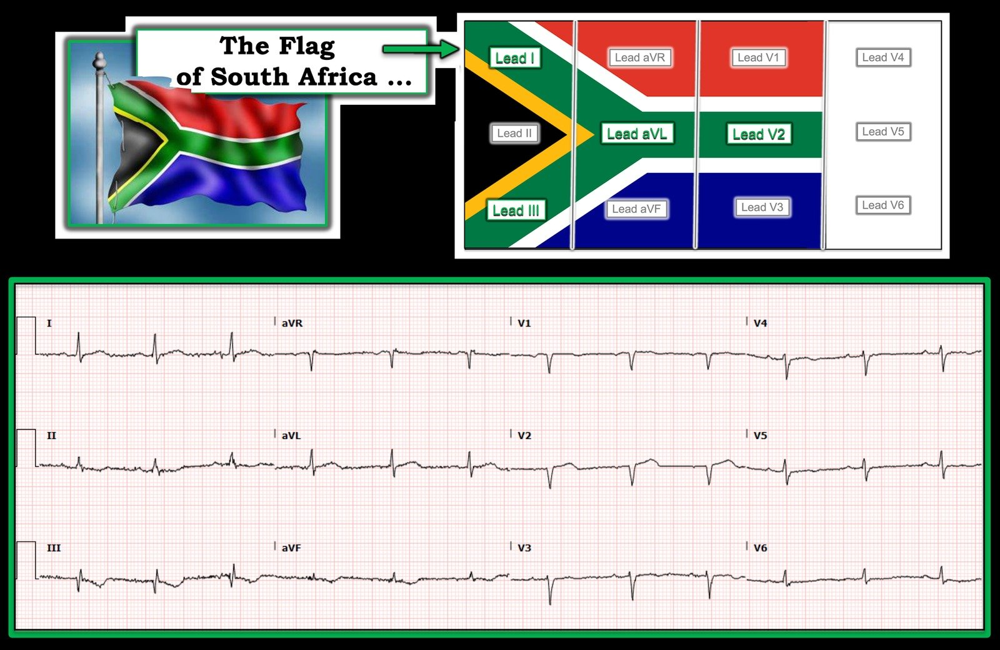
Bệnh nhân 1:
Một phụ nữ ở độ tuổi 60 đến viện vì cảm giác thắt ngực từng cơn trong 10 ngày. Cơn đau xuất hiện từ một lần mỗi ngày đến nhiều lần mỗi ngày, kéo dài 10-15 phút rồi tự hết. Đau xảy ra cả khi nghỉ lẫn khi gắng sức. Cơn gần nhất xảy ra vào khoảng 1600 chiều nay và kéo dài 15 phút. Theo ghi nhận, bà hết đau khi đến viện, lúc ghi điện tâm đồ này:
Phân loại (triage) lúc 1627
Điện tâm đồ được đọc là: “Có sóng T đảo ngược ở các chuyển đạo dưới và STE dưới 1mm ở V2, không đạt tiêu chuẩn STEMI.” Vì vậy bệnh nhân được đưa trở lại phòng chờ như nhiều người khác. Đã cho dùng aspirin.
Bà vẫn đang chờ trong phòng chờ khi kết quả troponin T độ nhạy cao đầu tiên lấy lúc phân loại trả về là 989 ng/L (khoảng tham chiếu ở nữ là dưới 12 ng/L).
Sau đó bà được đưa vào phòng khám và đánh giá lại, và bà vẫn không có triệu chứng gì đang diễn ra.
Điện tâm đồ ghi lại lúc 1918:

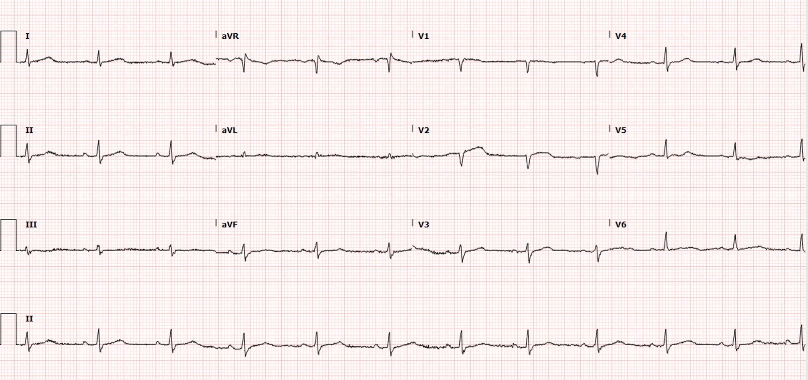
Troponin T lần thứ hai có kết quả 1,318 ng/L.
X-quang ngực được đọc là bình thường. Chụp CT mạch phổi (CTPA) âm tính với thuyên tắc phổi.
Đã bắt đầu dùng heparin.
Troponin lần thứ ba khoảng 4 giờ sau đó giảm xuống 756 ng/L.
Sáng hôm sau lúc 6 giờ:

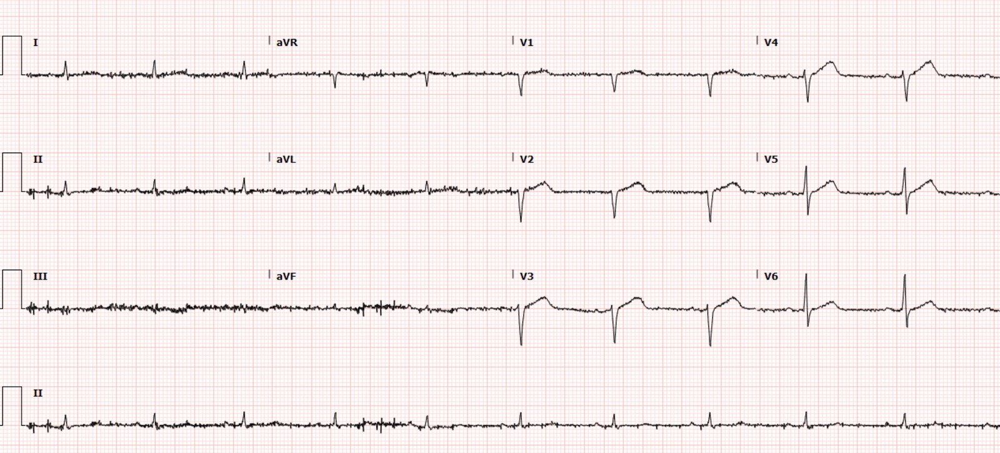
Tắc lại! Thay vì các dấu hiệu tái tưới máu tiến triển như kỳ vọng, ở đây ta thấy dấu hiệu OMI LAD với sóng T tối cấp từ V2-V6. Các chuyển đạo chi có điện thế thấp và có ít nhiễu, nhưng I và aVL “hướng lên”, nhiều khả năng kèm một số dấu hiệu soi gương “hướng xuống” ở III và aVF, nhưng điều này khó thấy do nhiễu và điện thế.
Việc nhận ra các sóng T này là sóng T tối cấp ở các chuyển đạo trước tim là cực kỳ quan trọng!
Không có ghi nhận nào về việc bệnh nhân có đau vào thời điểm này hay không.
Thông tim được thực hiện vào khoảng 9 giờ sáng:
Tổn thương thủ phạm ở LAD đoạn giữa, hẹp 99%, dòng chảy TIMI trước can thiệp không được ghi lại, đã thực hiện PCI với kết quả dòng chảy TIMI 3 và hẹp 0%. Các mạch khác có rải rác chỗ hẹp 20-30%.
Không đo thêm troponin nữa.
Khoảng 1 giờ sau thông tim, lúc 10 giờ sáng

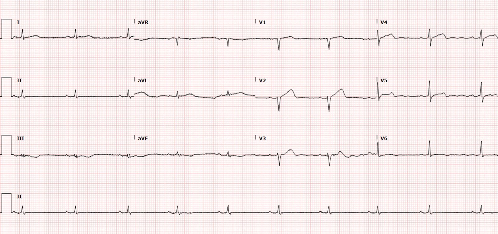
Siêu âm tim làm cuối ngày hôm đó cho thấy EF 45%, với vô động vùng trước vách, dưới vách đoạn giữa-mỏm, và cơ tim vùng mỏm. Cũng có vô động vùng bên và dưới ở mỏm, và giảm động vùng trước và trước bên đoạn giữa-mỏm. Thất phải bình thường, không có hẹp hay hở van đáng kể.
Ngày 3

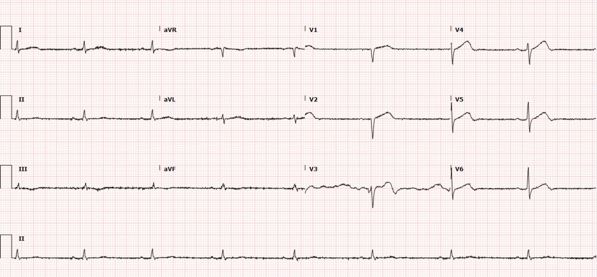
1 tháng sau:

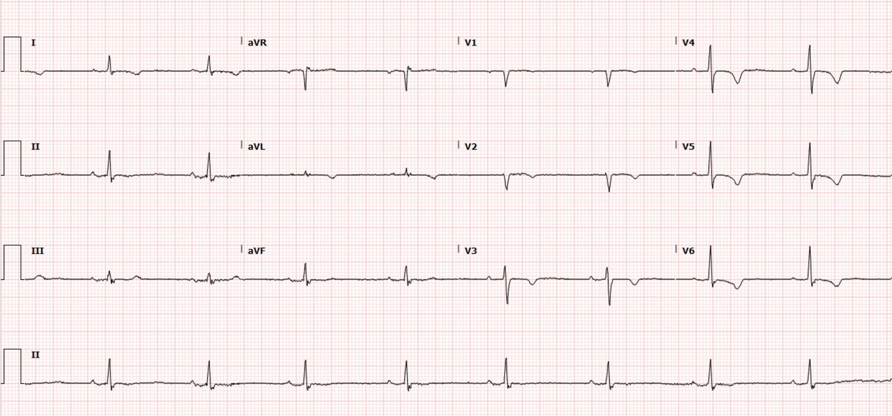
5 tháng sau:

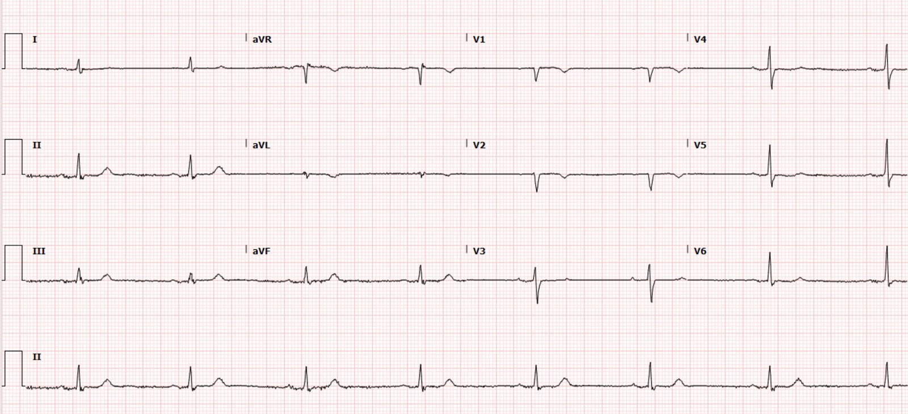
Bệnh nhân 2:
Một người đàn ông ở độ tuổi 30 đột ngột bị tức ngực khởi phát sau một cuộc cãi vã. Cơn đau kéo dài liên tục khoảng 12 giờ kể từ đó. Anh cũng than cảm thấy nóng bừng và buồn nôn trước một cơn ngất xảy ra khoảng một giờ trước.

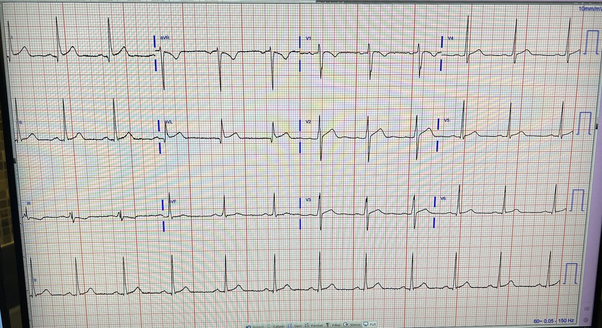
Các điện tâm đồ trên, không kèm chút bệnh sử lâm sàng nào, và tôi đã trả lời “Thú vị đấy, tôi nghiêng về khả năng đây là một biến thể bình thường giả dạng OMI vùng bên cao. Bệnh sử và thêm thông tin?”
(Sau đó tôi gửi nó cho Dr. Smith mà không kèm thông tin gì, ông nói “Tôi nghi đây không phải OMI”)
Mặc dù có STE ở I và aVL (có lẽ mỗi chuyển đạo 1 mm, đạt tiêu chuẩn STEMI), và STD soi gương ở III kèm sóng T dạng xuống-lên (down-up), kinh nghiệm trước đây giúp tôi đối chiếu điện tâm đồ này với những biến thể bình thường trước đây đã từng đánh lừa khiến tôi nghĩ là OMI vùng bên cao. Thật khó để mô tả tại sao.
Hai lần troponin T độ nhạy cao liên tiếp trả về 9 ng/L (khoảng tham chiếu ở nam là dưới 20 ng/L). Không phát hiện bệnh lý cấp tính nào khác. Anh được cho xuất viện về nhà.
Ghi chú của Smith: Tôi tin rằng mình có thể chỉ ra một số đặc điểm mà khả năng nhận dạng hình ảnh của tôi đã nhận ra:
1. Sóng R ở I và aVL trên điện tâm đồ “Không nhồi máu” tương đối lớn, với tỷ lệ STE trên sóng R thấp
2. Điện tâm đồ “Không nhồi máu” có đoạn ST lõm lên (upward concavity) rõ
3. Điện tâm đồ “Không nhồi máu” có khía điểm J ở I và aVL
4. Ở ca OMI, có STD ở aVF bên cạnh chuyển đạo III.
5. Ở ca OMI, có sóng Q ở V2 đi trước STE kín đáo; ở ca “Không nhồi máu”, có sóng R với biên độ đáng kể.
Đây là các chuyển đạo chi đặt cạnh nhau (bên trái là OMI, bên phải là biến thể bình thường)

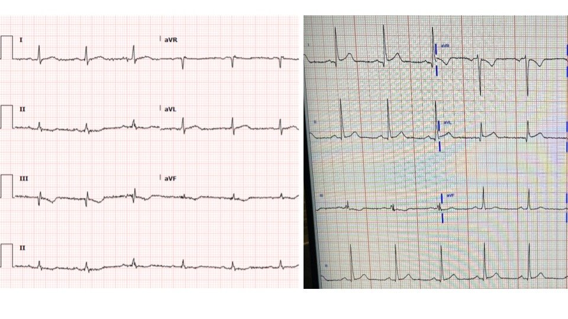

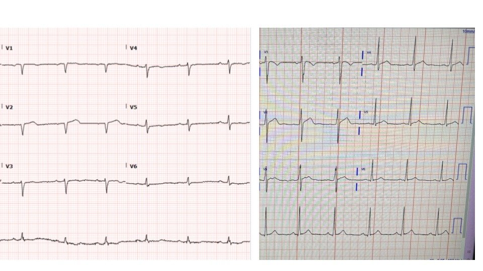
Đây là các chuyển đạo trước tim của họ đặt cạnh nhau:
Xem các ca liên quan khác:
True Positive ST elevation in aVL vs. False Positive ST elevation in aVL (ST chênh lên ở aVL dương tính thật so với ST chênh lên ở aVL dương tính giả)
Even when the story is obvious, with intractable pain, the STEMI paradigm can cause preventable delays (Ngay cả khi bệnh sử đã rõ ràng, với cơn đau dai dẳng không khống chế được, mô hình STEMI vẫn có thể gây ra những chậm trễ lẽ ra tránh được)
Man in his 60’s with very subtle ECG and pain not controlled with medical therapy (Người đàn ông ở độ tuổi 60 với điện tâm đồ rất kín đáo và cơn đau không kiểm soát được bằng điều trị nội khoa)
Pericarditis vs. MI #2 (Viêm màng ngoài tim so với nhồi máu cơ tim #2)
Xem các “Bài đố” khác:
Quiz post – which of these, if any, are OMI? What is the South African Flag Sign? Will you activate the cath lab? Can you tell the difference on ECG? (Bài đố – trong số này, nếu có, ca nào là OMI? Dấu hiệu "Cờ Nam Phi" là gì? Bạn có kích hoạt phòng thông tim không? Bạn có phân biệt được trên điện tâm đồ không?)
Two patients with chest pain. Do either of them need emergent reperfusion? Both? Neither? (Hai bệnh nhân đau ngực. Có ai trong số họ cần tái tưới máu cấp cứu không? Cả hai? Không ai?)
Những điểm cần học
Cần có sự học tập chuyên tâm và quan sát kết cục cùng các điện tâm đồ liên tiếp mới học được cách phân biệt các hình ảnh OMI kín đáo với các hình ảnh giả OMI (OMI mimic) như các ca ở trên.
Hiểu được diễn tiến của các dấu hiệu điện tâm đồ trong OMI là cực kỳ quan trọng để biết khi nào một OMI đã tái tưới máu bị tắc lại, như ở ca 2 ở trên.
Các dấu hiệu điện tâm đồ không định nghĩa điều gì đã xảy ra với bệnh nhân. OMI không được định nghĩa bằng điện tâm đồ, mặc dù sự thành thạo đọc điện tâm đồ giúp ích rất nhiều trong việc nhận ra OMI với độ đặc hiệu cao và sớm nhất có thể.

==================================
BÌNH LUẬN CỦA TÔI, bởi KEN GRAUER, MD (12/1/2023):
==================================
“Cái hay” của những ca như ca được Dr. Meyers trình bày hôm nay — là nó cho phép so sánh “giữa bản ghi này với bản ghi kia” — trong đó một điện tâm đồ gợi ý rõ ràng OMI cấp ( = điện tâm đồ #1 trong Hình 1) — và điện tâm đồ kia nhiều khả năng hơn là một biến thể tái cực (dù không thể loại trừ dứt khoát một biến cố cấp chỉ dựa vào điện tâm đồ #2).
- Dr. Meyers và Dr. Smith nêu bật trong phần bàn luận ở trên việc mỗi người đã trực giác “biết” (bằng nhận dạng hình ảnh) để nghi ngờ OMI cấp ở điện tâm đồ #1 — và nghi ngờ một biến thể tái cực ở điện tâm đồ #2. Tôi tập trung bình luận của mình vào lý do tại sao tôi ngay lập tức cũng cảm thấy như vậy.

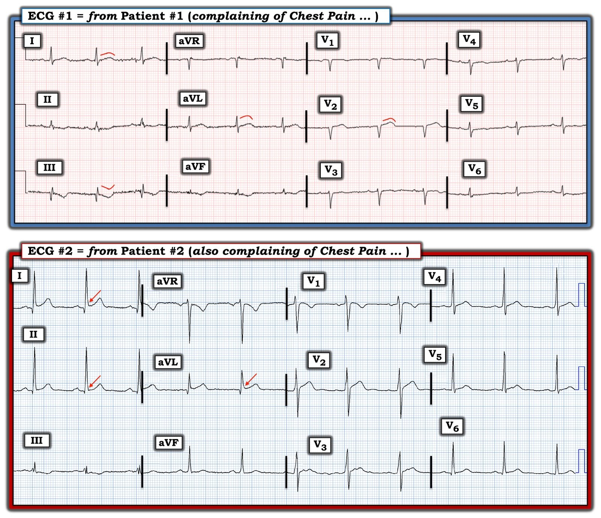
Suy nghĩ của tôi về điện tâm đồ #2:
Bắt đầu với bản ghi mà tất cả chúng tôi đều cho là biểu hiện của một biến thể tái cực ( = điện tâm đồ #2) — nhịp là nhịp xoang ~65-70 lần/phút. Mọi khoảng và trục đều bình thường — và không có lớn buồng tim.
Về Thay đổi Q–R–S–T:
- Có sóng Q nhỏ và hẹp ở các chuyển đạo bên I, aVL — và có thể ở V5,V6. Nhiều khả năng đây đều là sóng q vách bình thường.
- Tăng tiến sóng R trên điện tâm đồ #2 là phù hợp — với vùng chuyển tiếp (nơi sóng R trở nên cao hơn độ sâu của sóng S) xảy ra bình thường trong khoảng các chuyển đạo V2-đến-V4.
- Dấu hiệu sóng ST-T có lẽ đã “đập vào mắt” hầu hết người đọc — là ST chênh lên ở các chuyển đạo bên cao I và aVL. Giống như Dr. Smith — tôi cũng cho rằng ST chênh lên ở vùng bên cao này nhiều khả năng nhất là kết quả của một biến thể tái cực vì: i) Đoạn ST có dạng lõm lên trên (tức là cấu hình “mặt cười”); ii) Mức ST chênh lên tại điểm J là khiêm tốn khi xét đến biên độ sóng R ở các chuyển đạo này; iii) Dù không có khía rõ — vẫn có trát đậm kín đáo ở phần cuối QRS tại một số chuyển đạo có ST chênh lên, như thường thấy ở các biến thể tái cực (mũi tên ĐỎ trên điện tâm đồ #2); iv) Sóng q ở các chuyển đạo I và aVL hẹp và không sâu, khi xét đến biên độ sóng R ở các chuyển đạo này; và, v) Tôi không thấy thay đổi soi gương ở các chuyển đạo dưới — cũng không thấy thay đổi cấp ở các chuyển đạo ngực. Thay vào đó — tăng tiến sóng R rất tốt, với sóng R cao 9 mm ngay từ chuyển đạo V2.
ĐIỂM THEN CHỐT (PEARL) #1: Hơn là ST chênh lên ở các chuyển đạo I và aVL — điều khiến tôi lo ngại hơn là hình dạng của sóng ST-T ở chuyển đạo III và V2. Theo kinh nghiệm của tôi, manh mối tốt nhất cho thấy ST chênh lên phản ánh OMI cấp — là sự hiện diện của các dấu hiệu sóng ST-T đáng ngờ ở nhiều chuyển đạo khác.
- Mặc dù sóng ST-T ở chuyển đạo III chênh xuống — điều này không nhất thiết bất thường khi là một dấu hiệu đơn độc (tức là khi nó không thấy ở các chuyển đạo dưới khác). Việc QRS ở chuyển đạo III vừa rất nhỏ vừa phân mảnh khiến cho việc cũng có ST chênh xuống nông là không đáng ngạc nhiên. Do đó — tôi không tin chắc rằng ST chênh xuống đơn độc ở chuyển đạo III là một thay đổi “soi gương”.
- Đoạn khởi đầu ST ở chuyển đạo V2 thì có khả năng đáng lo ngại — vì đoạn khởi đầu ST này thẳng hơn bình thường, ở chỗ nó thiếu dáng dốc lên từ từ thường thấy. Cũng có ST chênh lên nhẹ ở chuyển đạo V2. Dù vậy — tôi không thấy thay đổi sóng ST-T đáng lo ngại ở 5 chuyển đạo ngực còn lại. Thay vào đó — tôi cho rằng có thể sóng ST-T ở chuyển đạo V2 chỉ là một “chuyển đạo chuyển tiếp” — ở chỗ nó nằm giữa ST dạng vòm (coving) và sóng T đảo ngược ở chuyển đạo V1 — với sóng T biên độ nhỏ ở chuyển đạo V3.
- Xin nhấn mạnh: Do Bệnh nhân #2 đến viện vì đau ngực — tôi không cảm thấy mình có thể loại trừ một biến cố cấp chỉ dựa vào điện tâm đồ #2. Dù vậy — tôi cho rằng khả năng cao hơn là điện tâm đồ #2, theo cách nói của Dr. Meyers, là một hình ảnh “giả dạng” — và có lẽ không phản ánh một quá trình cấp tính.
=========================
Suy nghĩ của tôi về điện tâm đồ #1:
Nhịp trên điện tâm đồ #1 là nhịp xoang ~70 lần/phút. Mọi khoảng và trục đều bình thường. Không có lớn buồng tim. Thay vào đó — có điện thế thấp lan tỏa.
Về Thay đổi Q–R–S–T:
- Có phức bộ QS ở các chuyển đạo V1 và V2 của điện tâm đồ #1.
- Một sóng r ban đầu rất nhỏ có thấy ở chuyển đạo III — vì vậy thay vì sóng Q, có phức bộ rSR’ ở chuyển đạo III.
- Một sóng r nhỏ có thấy ở chuyển đạo V3 — nhưng tăng tiến sóng R rõ ràng bị chậm, vì vùng chuyển tiếp mãi đến giữa các chuyển đạo V5-đến-V6 mới xuất hiện.
ĐIỂM THEN CHỐT (PEARL) #2: Chuyển đạo “đập vào mắt tôi” trên điện tâm đồ #1 — là chuyển đạo III. Hình dạng và kích thước không tương xứng của ST-T chênh xuống ở chuyển đạo III đơn giản là không “bình thường” — nhất là ở một bệnh nhân đến viện vì đau ngực mới xuất hiện. Một khi đã xác định được ít nhất 1 chuyển đạo rõ ràng là không “bình thường” — sẽ dễ nhận ra hơn những bất thường kín đáo hơn ở các chuyển đạo lân cận.
- Có sóng ST-T chênh xuống kín đáo-nhưng-có-thật ở 2 chuyển đạo dưới còn lại ( = các chuyển đạo II và aVF). Ủng hộ cho việc các dấu hiệu sóng ST-T ở chuyển đạo dưới này có thể là cấp tính — là hình dạng của đoạn ST ở các chuyển đạo bên cao I và aVL (tức là đoạn khởi đầu ST bị thẳng ra ở các chuyển đạo này, với gợi ý ST dạng vòm).
- Ở các chuyển đạo ngực, ngoài QS ở các chuyển đạo V1 và V2 — còn có ST chênh lên nhẹ và đoạn khởi đầu ST bị thẳng ra rõ ràng ở chuyển đạo V2. Ở một bệnh nhân đau ngực — đây đơn giản là không phải sóng ST-T “bình thường” ở chuyển đạo V2.
- Ngược lại — không có chuyển đạo ngực nào khác biểu hiện ST chênh lên. Thay vào đó — chuyển đạo V1 và các chuyển đạo V3-đến-V6 đáng chú ý ở sóng ST-T dẹt không đặc hiệu ở mỗi chuyển đạo này.
ĐIỂM THEN CHỐT (PEARL) #3: Hình ảnh sóng ST-T trên điện tâm đồ #1 gợi đến khả năng của hình ảnh "Cờ Nam Phi" — trong đó có ST chênh lên (hoặc sóng T tối cấp) ở các chuyển đạo chi bên I và aVL — sóng ST-T chênh xuống soi gương ở chuyển đạo III — và ST chênh lên ở chuyển đạo V2, nhưng không ở bất kỳ chuyển đạo ngực nào khác. Như chúng tôi đã trình bày trong nhiều bài trên Dr. Smith’s ECG Blog (Xin xem bình luận của tôi ở cuối trang trong bài ngày 8 tháng Tư năm 2022) — hình ảnh "Cờ Nam Phi" gợi ý có thể có OMI cấp của Nhánh Chéo thứ 1 hoặc thứ 2 của LAD.
- Một khả năng khác — một số bệnh nhân bị OMI LAD cấp có thể biểu hiện sớm với ST chênh lên ở các chuyển đạo ngực chỉ giới hạn ở chuyển đạo V2 — với ST chênh lên (hoặc sóng T tối cấp) chỉ xuất hiện muộn hơn ở các chuyển đạo ngực khác (như đã xảy ra ở Bệnh nhân thứ 2 này [người dịch: nguyên văn ghi “2nd Patient”, nhiều khả năng là lỗi đánh máy — ca OMI LAD là Bệnh nhân thứ nhất]).
ĐIỂM THEN CHỐT (PEARL) #4: Ủng hộ OMI cấp ở điện tâm đồ #2 [người dịch: nguyên văn ghi “ECG #2”, nhiều khả năng là lỗi đánh máy — ý nói điện tâm đồ thứ nhất] cho đến khi chứng minh được điều ngược lại là: i) Dấu hiệu sóng ST-T bất thường chắc chắn ở chuyển đạo III và chuyển đạo V2; ii) Phức bộ QS ở các chuyển đạo V1 và V2, với vùng chuyển tiếp muộn, chỉ có sóng r ban đầu rất nhỏ cho đến chuyển đạo V5; và, iii) Sóng ST-T bất thường ở bệnh nhân đau ngực mới xuất hiện này ở không dưới 11/12 chuyển đạo (tức là ở các chuyển đạo I,aVL; II,III,aVF; và cả 6 chuyển đạo ngực)!
ĐIỂM THEN CHỐT (PEARL) #5: Cần ghi nhớ rằng dấu hiệu điện tâm đồ điện thế thấp ở bệnh nhân OMI cấp có thể rất có ý nghĩa — vì trong danh sách các nguyên nhân gây điện thế thấp có nhồi máu cơ tim cấp diện rộng với chức năng thất trái suy giảm do “choáng” cơ tim (Để biết thêm về các nguyên nhân và ý nghĩa lâm sàng của điện thế thấp — Xin xem Bình luận của tôi ở cuối trang trong bài ngày 12 tháng Mười Một năm 2020 trên Dr. Smith’s ECG Blog).